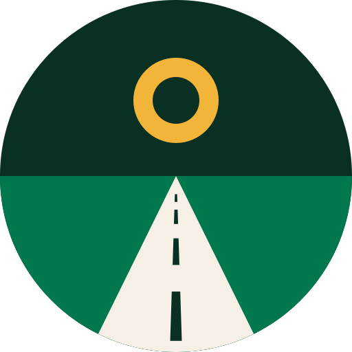

Czeka na Ciebie
Noc w zamku przekracza budżet o 140 zł
Oceń 6 miejsc w Krakowie
Tomek czeka na Twój głos
Nowa podróż
Twoje podróże
Gdańsk
10–12 paź · 3 dni
Kraków, niedziela
19 paź · wyjście
Zakopane
lut 2026 · 4 dni